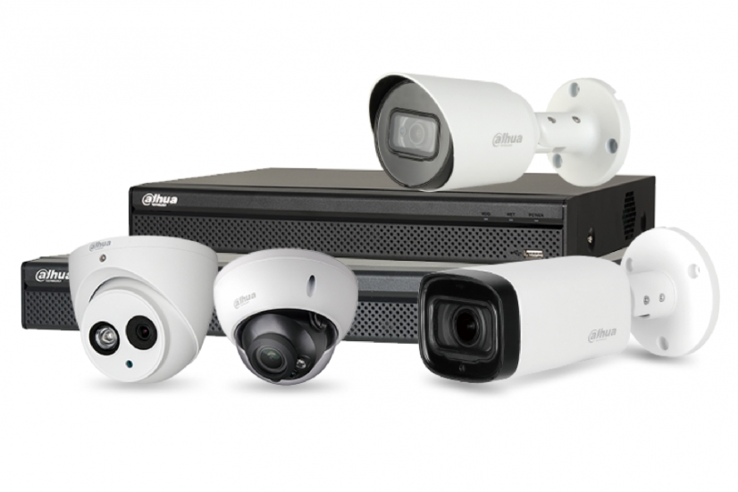

Productos destacados
Conoce uno de los kits más recomendados de cámaras Dahua:

- Cámara IP Dahua IPC-HFW1431S
- DVR Dahua XVR1B04
- Cámara Dahua HDW1239T
Productos destacados
Explora los mejores modelos de cámaras Dahua:
- Cámara IP Dahua IPC-HFW1431S
- DVR Dahua XVR1B04
- Cámara Dahua HDW1239T